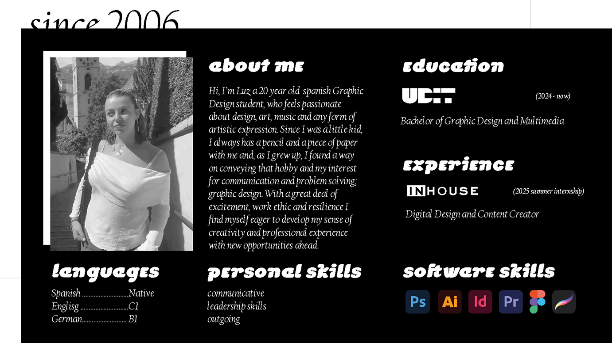

About
I’m Luz, a graphic designer based in Madrid. I’m highly passionate about art, music, illustration and urban aesthetics, as well as photography.

I’m Luz, a graphic designer based in Madrid. I’m highly passionate about art, music, illustration and urban aesthetics, as well as photography.
